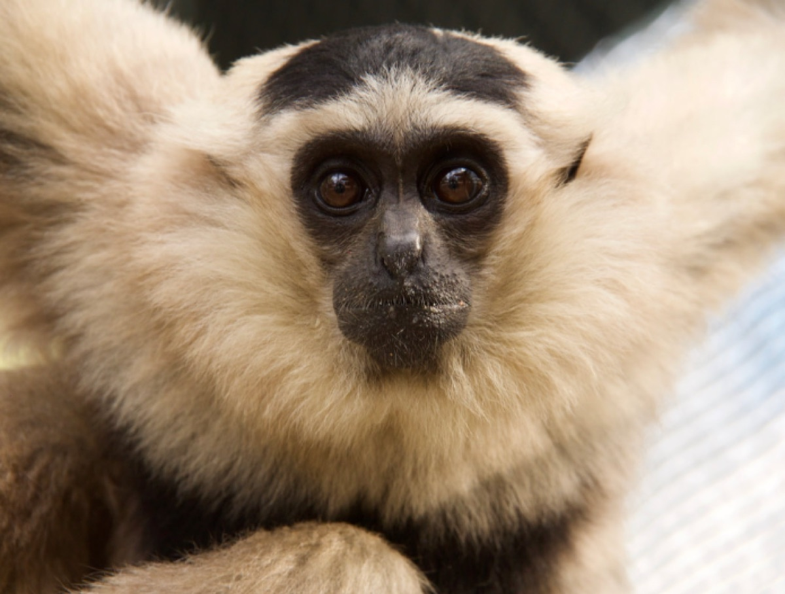
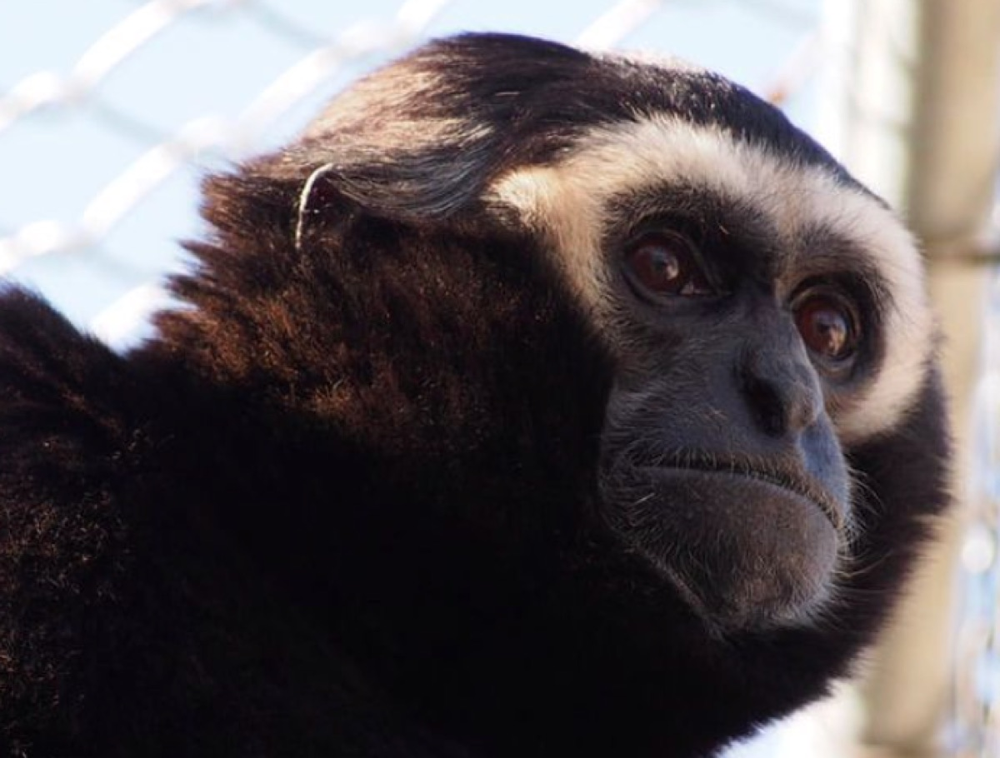
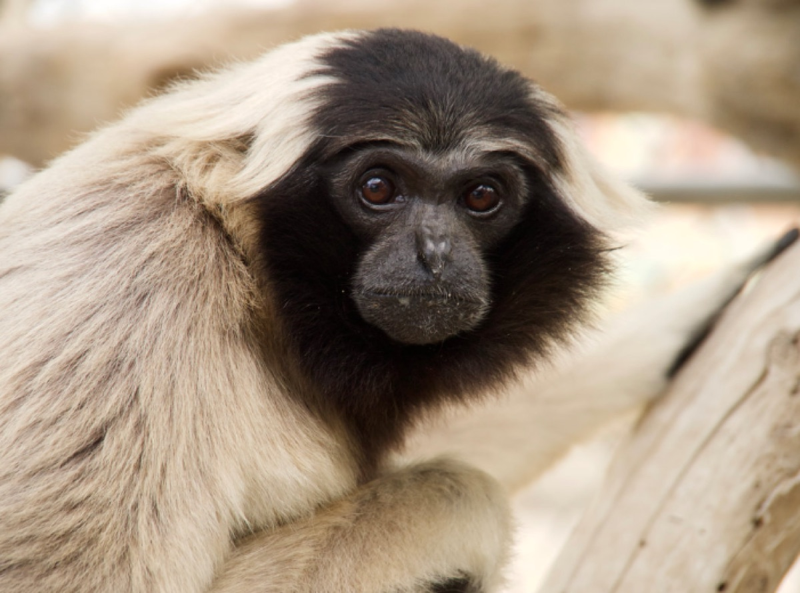

Life Sciences hackathon · built with Claude
From one gibbon's out-of-place light patch to a selection scan across 117 primate genomes — a walkthrough of what I built this week.

The question that started it
An adult male pileated gibbon should be almost completely black — like Truman. Howard isn't. He keeps a persistent patch of light hair on his back, and still reads a little more like a female of his species, like Tuk, who shares his enclosure.
The reason is almost too good: Howard had serious FOMO about the little treats Tuk was getting, and one day he grabbed one before anyone could stop him. Those treats were hormonal contraceptives — birth control. And his coat changed.


Hormones reached in and changed pigmentation. That's the whole reason I study this: pigmentation is a beautiful biological system that does unexpected things — and it talks to other systems. This week I set out to map that.
Act 1 · The network
Lots of genes drive pigmentation, and picking the ones we should care about is not simple. So I started from a literature-curated melanogenesis pathway — how keratinocytes (skin cells) and melanocytes (pigment cells) signal — and used Claude to query database after database, working backwards from that molecular signaling to build out the genes involved while keeping the pathway's directionality.
The result is a multi-layer network across 5 functional layers — now the first stop for students in my lab to learn which gene interactions actually matter for our research. Claude Code + Claude Science turned it into an immersive, database-linked app.
Act 2 · Coupling the hormones
Because of Howard, I wanted hormones in the picture. I pulled the sex-hormone gene set from KEGG — steroid-hormone biosynthesis and GnRH signaling — and used STRING to draw how those hormone genes wire into the pigmentation network. The result is a coupled network: a concrete map of how sex hormones are known to touch pigmentation genes through documented pathways.
Act 3 · The evolution test
To find out, I built a phylogenetic bioinformatics pipeline and ran it on the cluster. These 7 steps run for all 110 genes (pigmentation + hormone), each across 117 primate species:
The full DNA of 117 primate species (~700 GB) — each genome ~2.6–3 billion letters.
Locate each gene inside every genome and extract its DNA — matching the human protein where there's no gene map.
Stack all 117 species' versions of a gene so matching positions align.
Use the primate tree so the math accounts for shared ancestry — close cousins resemble each other for free.
For each gene, ask whether natural selection is intensified in dichromatic species, and on which lineages.
Dichromatism arose ~14 times — did evolution reuse the same genes, or different ones?
Every gene's selection stats, tagged by functional group, into readable tables.
It all runs in parallel on Michigan's Great Lakes supercomputer — total time equals the single slowest gene, not the sum. And every step is checked: a job saying "done" isn't the same as a job being right.
Act 3 · What came out
Sexual dichromatism turns out to be evolutionarily labile: it has ~14 independent origins across the primates and is lost far more readily than it's gained. It's a polygenic trait whose architecture is hard to pin down with the number of dichromatic lineages we have.
But the single gene that rises to the top of the cross-species scan is AKR1C4 — a steroid-hormone-metabolism gene. It's preliminary (24 dichromatic species; a suggestive, not established, signal). Yet if it holds, it's a straight line back to Howard: the exact place where hormones and pigmentation meet.
Explore everything
🏠 The full site
Overview, methods, and all 16 notebooks.
🕸️ The gene network
The 5-layer pigmentation network + hormone coupling.
🧬 Coupled panel (NB14)
The 110-gene two-module panel, tested for selection.
🐒 Dichromatism (NB15)
A labile, two-module trait across the primates.
📈 Cross-species GWAS (NB16)
Phylogeny-controlled association — the AKR1C4 hit.
💻 The code
Everything on GitHub — pipeline, data provenance, notebooks.